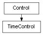

class cymel.ui.uitypes.TimeControl¶

-
class
cymel.ui.uitypes.TimeControl¶ ベースクラス:
cymel.ui.control.Controlmel の timeControl ラッパークラス。
Methods:
UICMDMethods Details:
-
UICMD()¶
-
cymel.ui.uitypes.TimeControl¶ベースクラス: cymel.ui.control.Control
mel の timeControl ラッパークラス。
Methods:
UICMD |
Methods Details:
UICMD()¶